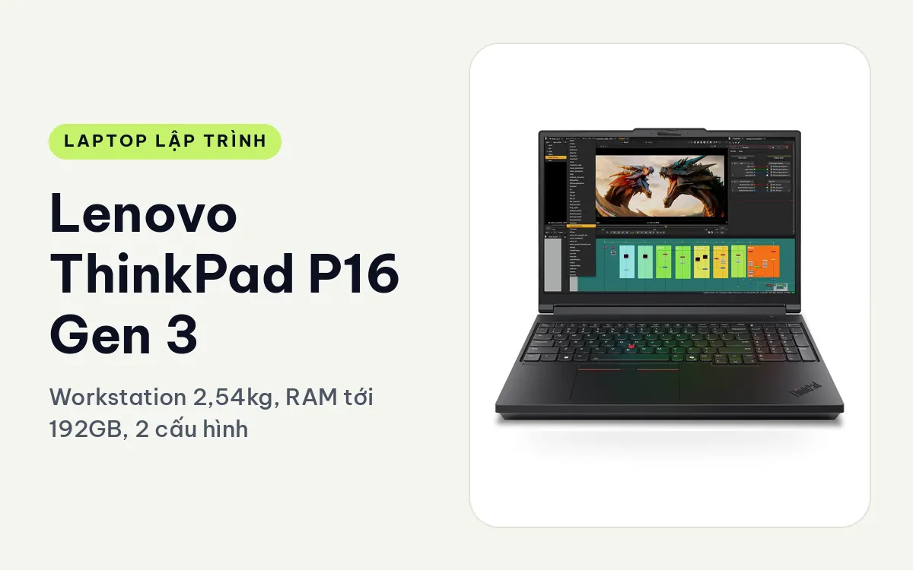
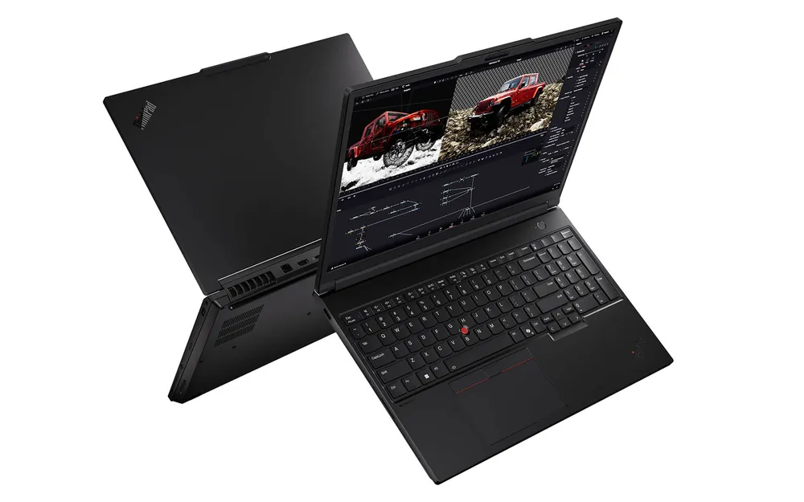
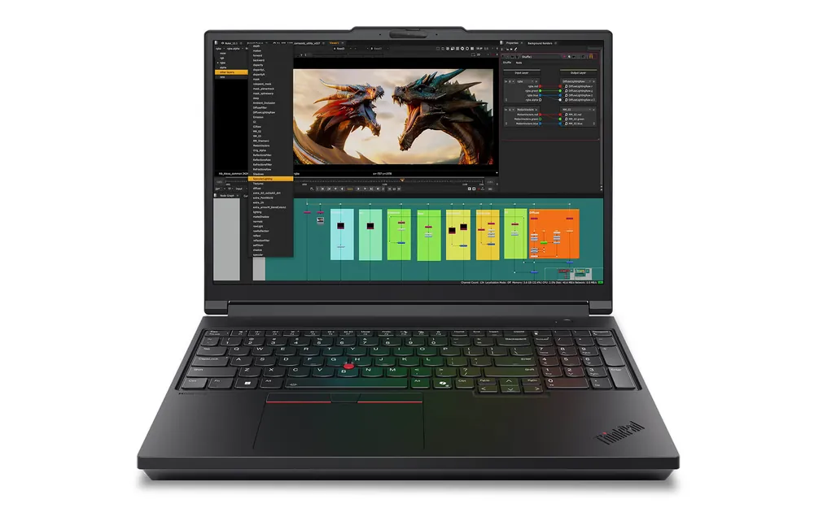
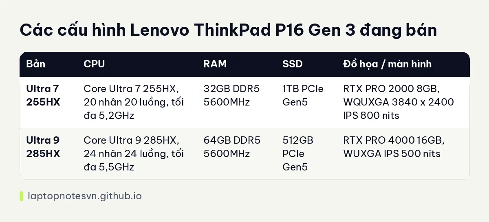

Lenovo ThinkPad P16 Gen 3 cho lập trình - Workstation 2,54kg, RAM tới 192GB, 2 cấu hình

Lenovo ThinkPad P16 Gen 3 (2025) là workstation lớn nhất trong ba máy 16 inch cùng hãng. Máy dùng chip dòng HX nhiều nhân, card RTX PRO Blackwell, 4 khe RAM và 3 khe SSD, tức là đường nâng cấp rộng nhất của cả nhóm ThinkPad đang bán.
Đổi lại, máy to và nặng, hợp người đặt trên bàn làm việc nhiều hơn là xách đi mỗi ngày. Bài này nói rõ từng bản dành cho ai, vì hai cấu hình khác nhau khá xa.
Thiết kế
Khung máy đạt chuẩn MIL-STD-810H, vỏ có dùng vật liệu tái chế, đường nét góc cạnh, màu tối. So với cái tên workstation thì đây vẫn là thiết kế gọn gàng, đủ nghiêm túc để mang vào phòng họp khách hàng.

Bàn phím chống tràn, có đèn nền, TrackPoint đỏ và touchpad lớn đa điểm. Gõ code lâu không mỏi tay, vì đây là phần ThinkPad làm tốt nhất.
Màn hình 16 inch tỉ lệ 16:10, hiệu chuẩn màu X-Rite tại nhà máy, có TÜV Eyesafe giảm ánh sáng xanh. Tùy chọn gồm OLED 3.2K, WQUXGA 3840 x 2400 IPS 800 nits hoặc WUXGA IPS 500 nits. Hai cấu hình đang bán dùng hai tấm IPS cuối.
Cổng kết nối rất đầy đủ: hai Thunderbolt 5 (80Gbps, sạc PD 3.1, DisplayPort 2.1), một Thunderbolt 4, hai USB-A 10Gbps với một cổng luôn bật, mạng Ethernet RJ45 2,5Gbps, HDMI 2.1 xuất tới 8K 60Hz, jack tai nghe và đầu đọc thẻ SD Express 8.0. Wi-Fi 7 và Bluetooth 5.4 có sẵn, còn Nano SIM và đầu đọc thẻ thông minh là tùy chọn.
Mang đi hằng ngày
Máy nặng từ 2,54 kg, rộng 362 mm, sâu 252 mm, dày từ 15,8 đến 20,9 mm. Con số này nặng nhất trong ba máy 16 inch ở bài loạt này, và chưa kể củ sạc công suất lớn. Mang đi học mỗi ngày thì mệt, còn chuyển giữa nhà và văn phòng bằng xe thì chấp nhận được.

Pin 99,9Wh, hỗ trợ sạc nhanh Rapid Charge Pro, từ 0 đến 80% trong khoảng 1 giờ. Chip HX và card rời ăn điện khá nhiều, nên khi build nặng hay chạy GPU thì pin xuống nhanh và nên cắm sạc.
Có mấy cấu hình
Có 2 cấu hình. Cả hai dùng RAM DDR5 5600MHz dạng SO-DIMM, tức là thay được.

| Bản | CPU | RAM | SSD | Đồ họa / màn hình |
|---|---|---|---|---|
| Ultra 7 255HX | Core Ultra 7 255HX, 20 nhân 20 luồng, tối đa 5,2GHz | 32GB DDR5 5600MHz | 1TB PCIe Gen5 | RTX PRO 2000 8GB, WQUXGA 3840 x 2400 IPS 800 nits |
| Ultra 9 285HX | Core Ultra 9 285HX, 24 nhân 24 luồng, tối đa 5,5GHz | 64GB DDR5 5600MHz | 512GB PCIe Gen5 | RTX PRO 4000 16GB, WUXGA IPS 500 nits |
Bản Core Ultra 7 255HX, 32GB, RTX PRO 2000
Chip 20 nhân đã mạnh hơn hẳn dòng H của máy mỏng. Bản này hợp build C++ hoặc Rust lớn, chạy nhiều container, máy ảo và thử mô hình AI cỡ nhỏ trên card RTX PRO 2000 8GB. Dung lượng SSD 1TB cũng đủ rộng cho nhiều dự án.
Màn WQUXGA sắc nét, màu rộng 100% DCI-P3, thuận lợi khi vừa code vừa làm đồ họa kỹ thuật hoặc đọc tài liệu nhiều. Đây là bản cân bằng của dòng, hợp nhất với dev backend, DevOps và người làm AI cỡ vừa.
Bản Core Ultra 9 285HX, 64GB, RTX PRO 4000
Bản này mạnh hẳn: 24 nhân, 64GB RAM và card RTX PRO 4000 16GB. VRAM 16GB mở ra việc huấn luyện hoặc tinh chỉnh mô hình lớn hơn, chạy suy luận mô hình ngôn ngữ cục bộ, mô phỏng và render nặng. Dân data, ML hoặc kỹ sư mô phỏng sẽ dùng hết sức mạnh này.
Phần nên cân nhắc kỹ: SSD chỉ 512GB, màn WUXGA 500 nits sáng vừa phải và bản này ghi là hàng mới không hộp. Dung lượng ổ nhỏ so với phần còn lại nhưng máy có 3 khe SSD, tối đa 12TB, nên gắn thêm ổ khá dễ. Với dữ liệu lớn, anh chị nên tính luôn khoản này.
Nên chọn bản nào
Dev đa dụng, DevOps, backend nặng nên chọn bản 255HX. Người làm AI, mô phỏng và cần VRAM lớn chọn bản 285HX. Máy cho phép nâng RAM tới 192GB với 4 khe SO-DIMM 48GB, nên nếu sau này thiếu bộ nhớ vẫn nâng được.
Với dân lập trình, lợi thế lớn nhất của máy là thay linh kiện thay vì đổi máy. Thiếu RAM thì cắm thêm thanh, đầy ổ thì gắn thêm SSD vào khe trống, và ba năm sau vẫn dùng tiếp được chiếc vỏ cũ. Đây là điều các máy mỏng hàn RAM không làm được, và là lý do P16 vẫn có chỗ đứng dù cồng kềnh.
Còn nếu 2,54 kg quá nặng, xem ThinkPad P1 Gen 8 cho lập trình nhẹ hơn nhiều. Còn việc 32GB hay 64GB, hãy đọc lập trình viên cần bao nhiêu RAM.
Đăng ngày 08/11/2026